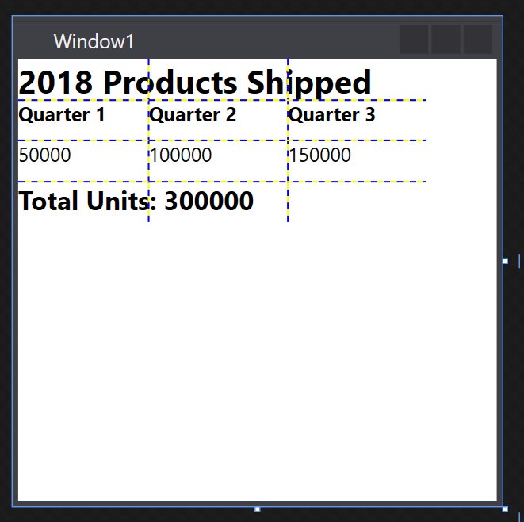

Практическое руководство. Создание элемента сетки
Пример
В следующем примере показано, как создать и использовать экземпляр Grid либо при помощи XAML или кода. В этом примере используются три ColumnDefinition объектов и три RowDefinition объектов для создания сетки, который принимает девять ячеек, как в рабочем листе. Каждая ячейка содержит TextBlock содержит элемент, который представляет данные, а верхняя строка TextBlock с ColumnSpan свойства применен. Показать границы каждой ячейки, ShowGridLines включено свойство.
// Create the application's main window
mainWindow = new Window();
mainWindow.Title = "Grid Sample";
// Create the Grid
Grid myGrid = new Grid();
myGrid.Width = 250;
myGrid.Height = 100;
myGrid.HorizontalAlignment = HorizontalAlignment.Left;
myGrid.VerticalAlignment = VerticalAlignment.Top;
myGrid.ShowGridLines = true;
// Define the Columns
ColumnDefinition colDef1 = new ColumnDefinition();
ColumnDefinition colDef2 = new ColumnDefinition();
ColumnDefinition colDef3 = new ColumnDefinition();
myGrid.ColumnDefinitions.Add(colDef1);
myGrid.ColumnDefinitions.Add(colDef2);
myGrid.ColumnDefinitions.Add(colDef3);
// Define the Rows
RowDefinition rowDef1 = new RowDefinition();
RowDefinition rowDef2 = new RowDefinition();
RowDefinition rowDef3 = new RowDefinition();
RowDefinition rowDef4 = new RowDefinition();
myGrid.RowDefinitions.Add(rowDef1);
myGrid.RowDefinitions.Add(rowDef2);
myGrid.RowDefinitions.Add(rowDef3);
myGrid.RowDefinitions.Add(rowDef4);
// Add the first text cell to the Grid
TextBlock txt1 = new TextBlock();
txt1.Text = "2005 Products Shipped";
txt1.FontSize = 20;
txt1.FontWeight = FontWeights.Bold;
Grid.SetColumnSpan(txt1, 3);
Grid.SetRow(txt1, 0);
// Add the second text cell to the Grid
TextBlock txt2 = new TextBlock();
txt2.Text = "Quarter 1";
txt2.FontSize = 12;
txt2.FontWeight = FontWeights.Bold;
Grid.SetRow(txt2, 1);
Grid.SetColumn(txt2, 0);
// Add the third text cell to the Grid
TextBlock txt3 = new TextBlock();
txt3.Text = "Quarter 2";
txt3.FontSize = 12;
txt3.FontWeight = FontWeights.Bold;
Grid.SetRow(txt3, 1);
Grid.SetColumn(txt3, 1);
// Add the fourth text cell to the Grid
TextBlock txt4 = new TextBlock();
txt4.Text = "Quarter 3";
txt4.FontSize = 12;
txt4.FontWeight = FontWeights.Bold;
Grid.SetRow(txt4, 1);
Grid.SetColumn(txt4, 2);
// Add the sixth text cell to the Grid
TextBlock txt5 = new TextBlock();
Double db1 = new Double();
db1 = 50000;
txt5.Text = db1.ToString();
Grid.SetRow(txt5, 2);
Grid.SetColumn(txt5, 0);
// Add the seventh text cell to the Grid
TextBlock txt6 = new TextBlock();
Double db2 = new Double();
db2 = 100000;
txt6.Text = db2.ToString();
Grid.SetRow(txt6, 2);
Grid.SetColumn(txt6, 1);
// Add the final text cell to the Grid
TextBlock txt7 = new TextBlock();
Double db3 = new Double();
db3 = 150000;
txt7.Text = db3.ToString();
Grid.SetRow(txt7, 2);
Grid.SetColumn(txt7, 2);
// Total all Data and Span Three Columns
TextBlock txt8 = new TextBlock();
txt8.FontSize = 16;
txt8.FontWeight = FontWeights.Bold;
txt8.Text = "Total Units: " + (db1 + db2 + db3).ToString();
Grid.SetRow(txt8, 3);
Grid.SetColumnSpan(txt8, 3);
// Add the TextBlock elements to the Grid Children collection
myGrid.Children.Add(txt1);
myGrid.Children.Add(txt2);
myGrid.Children.Add(txt3);
myGrid.Children.Add(txt4);
myGrid.Children.Add(txt5);
myGrid.Children.Add(txt6);
myGrid.Children.Add(txt7);
myGrid.Children.Add(txt8);
// Add the Grid as the Content of the Parent Window Object
mainWindow.Content = myGrid;
mainWindow.Show ();
<Page xmlns="http://schemas.microsoft.com/winfx/2006/xaml/presentation" WindowTitle="Grid Sample">
<Grid VerticalAlignment="Top" HorizontalAlignment="Left" ShowGridLines="True" Width="250" Height="100">
<Grid.ColumnDefinitions>
<ColumnDefinition />
<ColumnDefinition />
<ColumnDefinition />
</Grid.ColumnDefinitions>
<Grid.RowDefinitions>
<RowDefinition />
<RowDefinition />
<RowDefinition />
<RowDefinition />
</Grid.RowDefinitions>
<TextBlock FontSize="20" FontWeight="Bold" Grid.ColumnSpan="3" Grid.Row="0">2005 Products Shipped</TextBlock>
<TextBlock FontSize="12" FontWeight="Bold" Grid.Row="1" Grid.Column="0">Quarter 1</TextBlock>
<TextBlock FontSize="12" FontWeight="Bold" Grid.Row="1" Grid.Column="1">Quarter 2</TextBlock>
<TextBlock FontSize="12" FontWeight="Bold" Grid.Row="1" Grid.Column="2">Quarter 3</TextBlock>
<TextBlock Grid.Row="2" Grid.Column="0">50000</TextBlock>
<TextBlock Grid.Row="2" Grid.Column="1">100000</TextBlock>
<TextBlock Grid.Row="2" Grid.Column="2">150000</TextBlock>
<TextBlock FontSize="16" FontWeight="Bold" Grid.ColumnSpan="3" Grid.Row="3">Total Units: 300000</TextBlock>
</Grid>
</Page>
Любой из этих подходов создаст пользовательский интерфейс, который всегда выглядит практически так же, как показано ниже.
